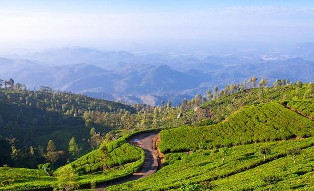
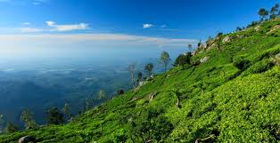

Haputaler is a town of Badulla District in the Uva Province, Sri Lanka, governed by an Urban Council. The elevation is 1431 m (4695 ft) above the sea level. The area has a rich bio-diversity dense with numerous varieties of flora and fauna. Haputale is surrounded by hills covered with cloud forests and tea plantations. The town has a cooler climate than its surroundings, due to its elevation. The Haputale pass allows views across the Southern plains of Sri Lanka. The South-West boundary of Uva basin is marked by the Haputale mountain ridges, which continue on to Horton Plains and Adam's Peak to the west. CNN in 2010 named Haputale as one of Asia's most overlooked destinations.
 